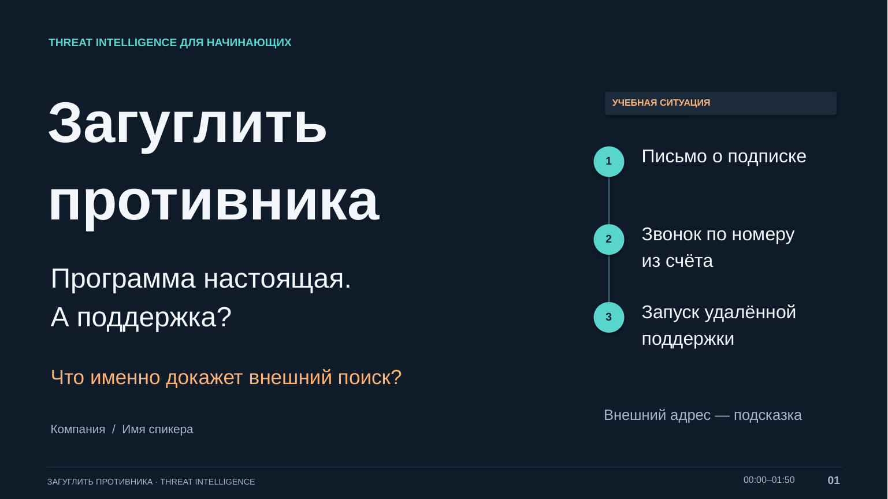

THREAT INTELLIGENCE ДЛЯ НАЧИНАЮЩИХ
Загуглить
противника
16 слайдов
14 основных + 2 справочных
Доклад на 25 минут
Заметки спикера внутри PPTX

Переключайте слайды кнопками или стрелками на клавиатуре.
Новый самостоятельный доклад
Дело об обновлении 3CX
Полная речь для младших курсов, бриф 14 слайдов, демонстрация и памятка.
Открыть материалы 3CX →